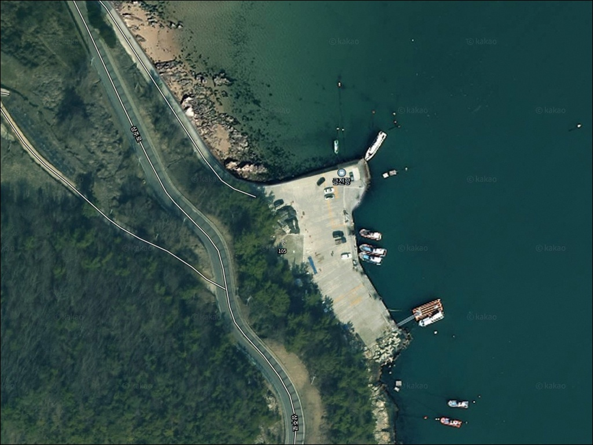
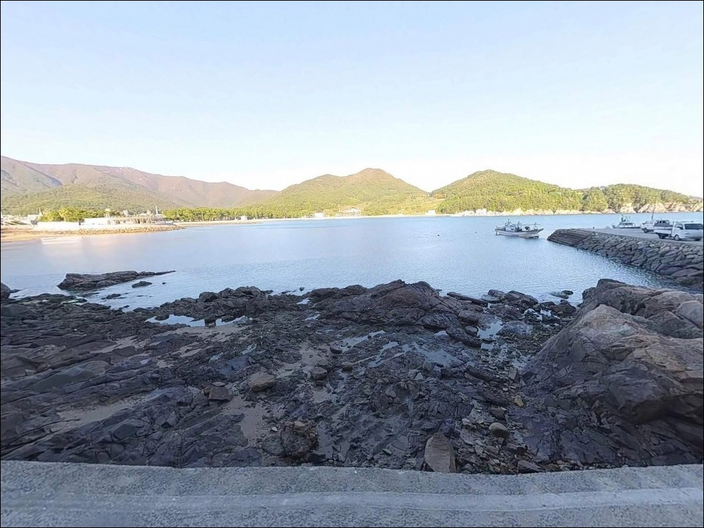
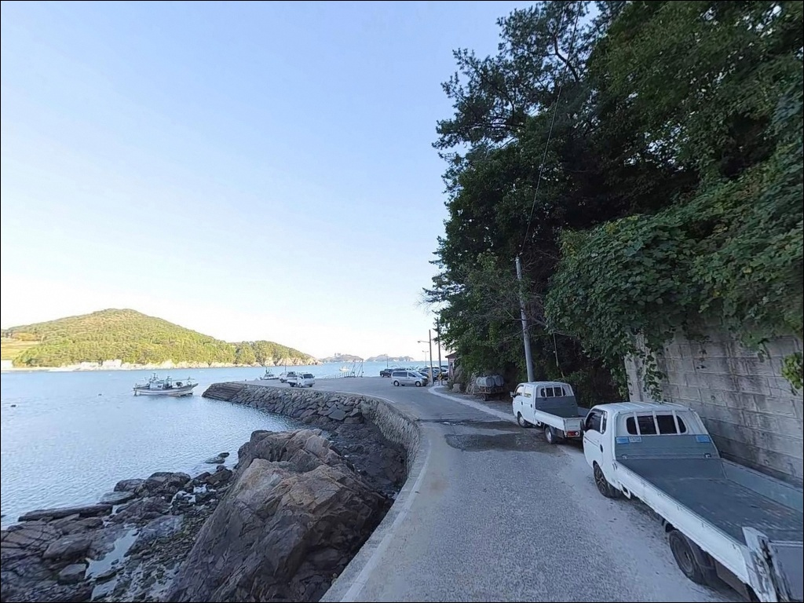
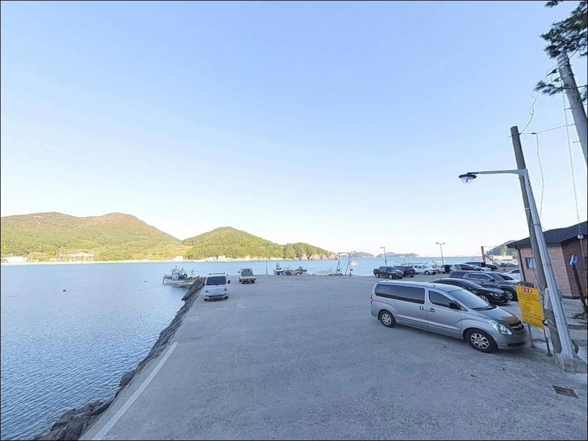
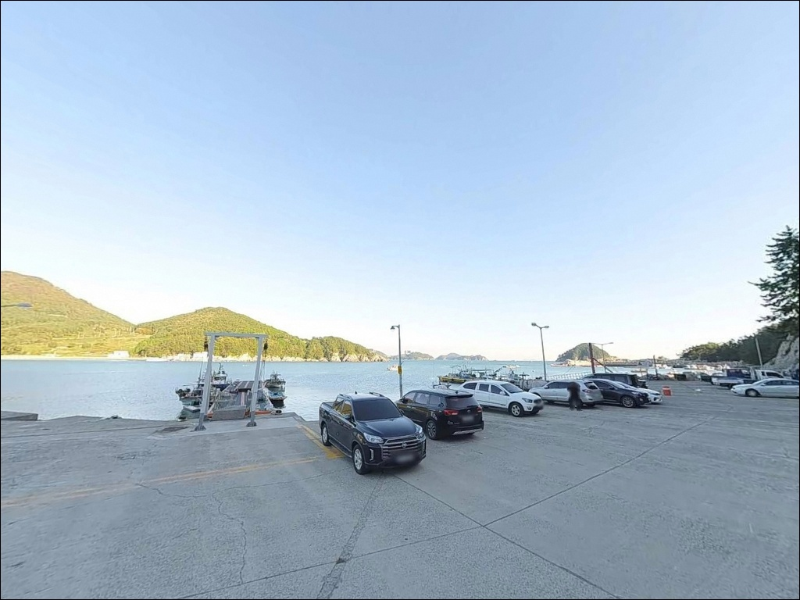
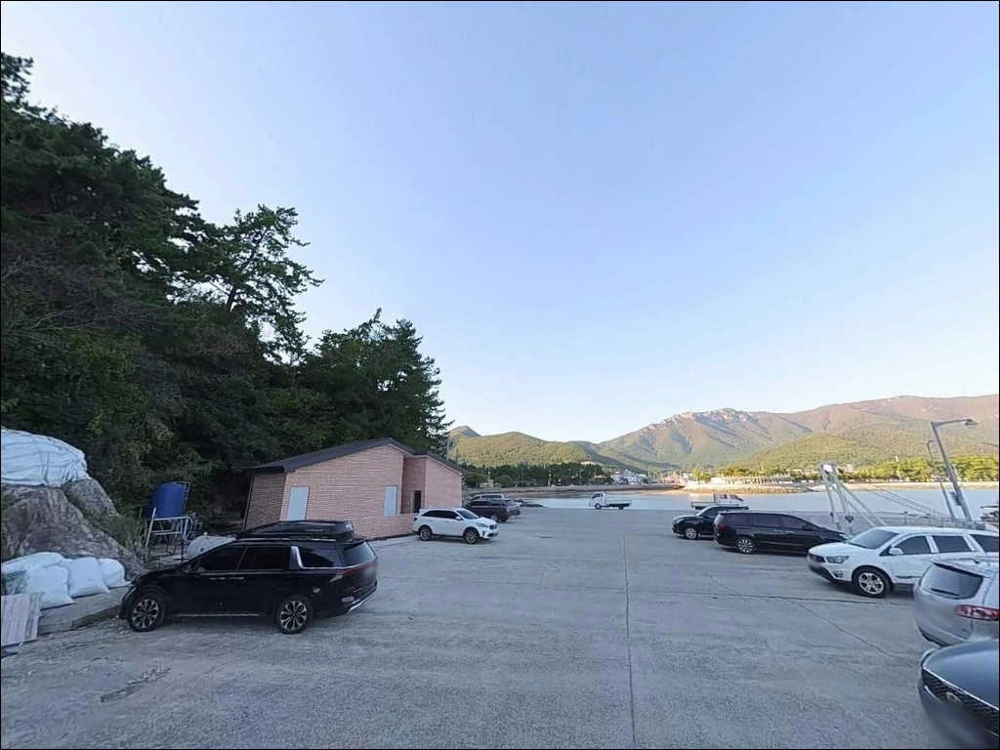
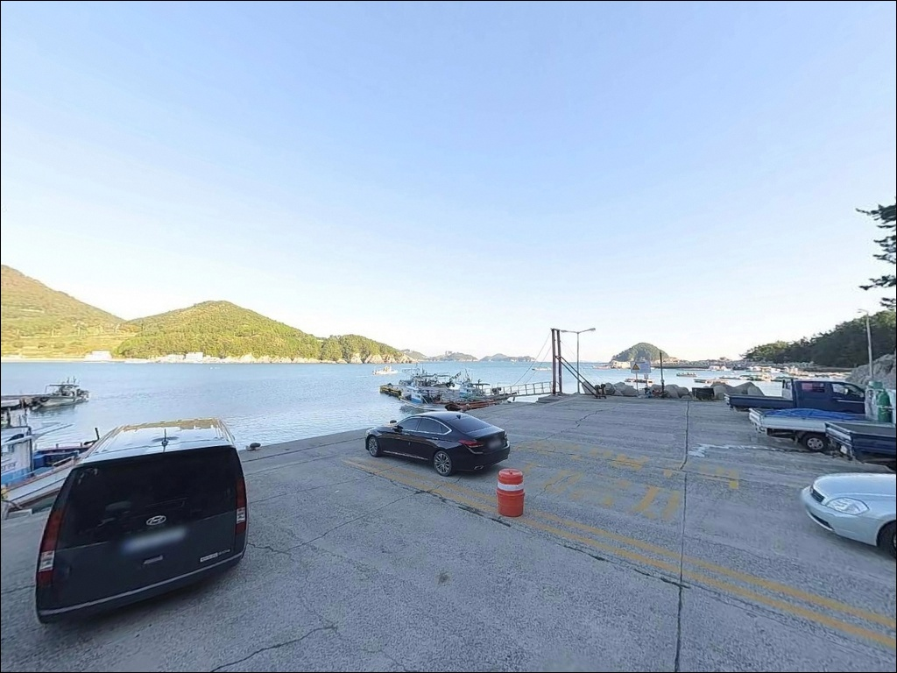
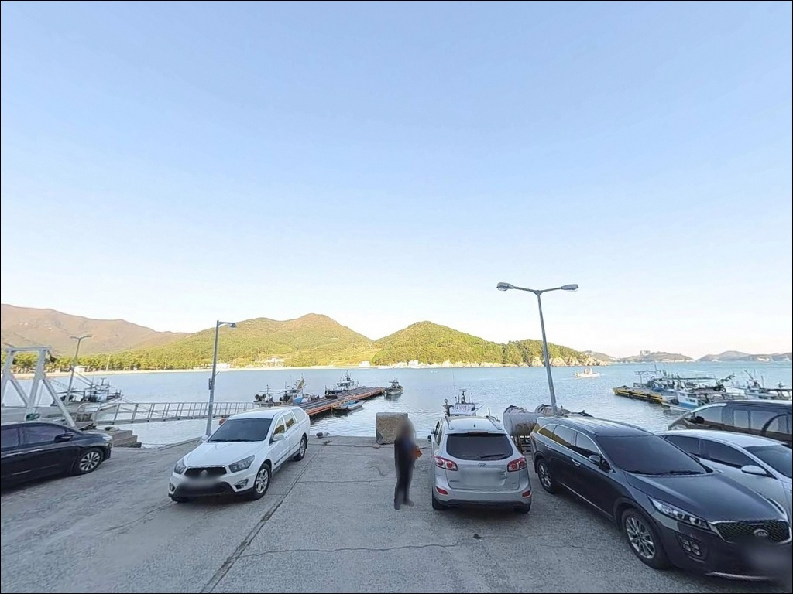
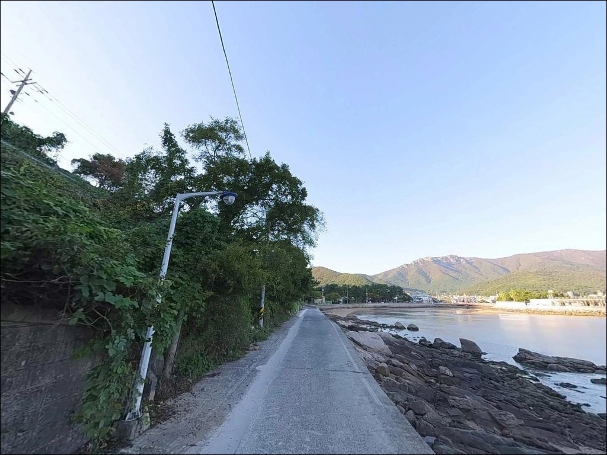

남해 금전항 방파제, 들물 전환 시 수심 7m 콧부리에서 터진 입질
이 페이지에는 광고(제휴 링크 포함)가 있으며, 광고 링크를 통해 구매하면 운영자가 판매 수익 또는 수수료를 받을 수 있습니다. 포인트 사진: 카카오맵 스카이뷰·로드뷰. 이 페이지의 지도·사진 이미지는 카카오맵의 실제 서비스 이미지와 다를 수 있습니다.


포인트 안내
금전항
경남 남해군 상주면 상주리 1380-2
상주은모래비치 서쪽 끝에 붙은
금전마을 선착장은
온라인에 조황 기록이 많지 않지만
방파제 외항이 남해 외해로 직결되는 구조라
조류가 흐르는 타이밍에 루어와 찌낚시 반응이
모두 살아나는 포인트입니다.
방파제 길이 138m, 폭 5.5m의 어촌정주어항으로
공식 시설 제원이 확인된 곳입니다.
끝단 콧부리는 수심이 급격히 깊어지는 구간이며,
물량장(85m×27m)이 항 내 가장 넓은 평탄 구역으로
낚시 후 하룻밤 차박 거점으로
활용할 수 있는 여건도 갖추고 있습니다.
이 글은 금전항의 진입 동선, 차박 여건,
물때·지형 기반 낚시 여건 분석,
낚시 방식별 공략 조건에 집중합니다.
조황 단정이나 특정 어종 보장은
이 글의 범위에 포함되지 않습니다.

1. 진입 동선과 차량 접근 조건
금전항은 상주면 소재지에서
상주리 방향 해안도로를 따라
금전마을로 진입하는 구조입니다.
진입로 대부분은 포장도로이나,
마을 내부 구간은 왕복 1차선 수준의 좁은 도로로
서행이 기본입니다.
승용차나 소형~중형 SUV는
큰 무리 없이 들어갈 수 있는 구조이며,
물량장(85m×27m) 공간이 넓어
차량 회차도 원활합니다.
다만 대형 캠핑카나
트레일러를 끄는 차량이라면
출발 전 위성지도로
마을 진입로와 회차 공간을 먼저 확인하는 것이
헛걸음을 막는 기본 조건입니다.
주차는 물량장 내 어선 미사용 구간,
방파제 진입 직전 도로변 평탄 구간,
선착장 주변 여유 공간을 활용하는 방식입니다.
어민 작업 구간과 어선 하역 구역은
반드시 피해야 합니다.

2. 차박 환경과 야간 체류 여건
금전마을은 소규모 어촌으로
민가 밀집도가 낮은 편이며,
야간에는 차량 통행이 드물어
비교적 조용한 환경이 유지됩니다.
물량장 공간이 평탄하고 넓어
낚시 후 자리를 깔고 하룻밤 머무는
용도로는 나쁘지 않은 구조입니다.
방파제 등대 조명이 있으나
마을 내 가로등 수는 제한적입니다.
야간 낚시 시 개인 조명(헤드랜턴) 준비는 필수이며,
마을과 인접한 위치 특성상
야간 정숙 유지가 기본 매너입니다.
외해 방향으로 노출된 구조라
남·동계열 바람이 세게 부는 날에는
방파제 끝단 쪽 바람 체감이 강해지는 편입니다.
차박을 목적으로 방문한다면
당일 기상 예보에서
풍향과 풍속을 먼저 확인해두는 것이
현장 체류 판단의 기준이 됩니다.


3. 주변 편의시설 및 인프라 여건
금전항에서 차량으로 5분 거리에
상주은모래비치 일대가 있습니다.
상주면 소재지와 해수욕장 주변에
편의점·식당·낚시점이 밀집해 있어
보급 여건은 양호한 편입니다.
출발 전 부족한 소품이나 얼음은
이 동선에서 해결하는 것이 효율적입니다.
항구 내 공용 화장실이 있습니다.
다소 규모가 작은 시설이므로
좀 더 넓은 화장실을 원한다면
상주은모래비치 공중화장실이
차량으로 3~5분 거리에 있습니다.
응급 상황 발생 시
남해읍 방향으로 이동하면
병원과 대형 마트를 이용할 수 있습니다.
이동 거리가 있는 만큼
비상약품과 수분 준비는 출발 전에
갖추고 나서는 것이 기본입니다.

4. 방문 전 준비사항 및 판단 기준
금전항 방문 전 가장 먼저 확인할 것은
물때입니다.
방파제 끝단 콧부리는
조류가 방파제를 돌아 흐르는 지점으로,
들물 타임에 어류 활성이 높아지는 구조입니다.
바다타임에서 상주면 기준 물때를 확인하고
들물 또는 썰물 전환 전후를 노려
출발 시각을 맞추는 것이 기본 전략입니다.
외해 방향으로 열린 구조라
기상 변화에 직접 노출됩니다.
남·동풍이 강한 날에는
방파제 끝단 낚시 여건이 급격히 나빠지므로,
출발 당일 아침 기상청 예보를
다시 한번 확인하는 것이
포인트 낭비를 줄이는 방법입니다.
방파제 외항 일부 구간에는 테트라포트가 설치된 구간이 있습니다.
야간에 테트라포트 위를 이동할 경우
해조류로 인해 미끄러울 수 있으므로
미끄럼 방지 신발과 구명조끼는 기본 장비입니다.
암초지대 특성상 채비 손실이 발생할 수 있어
여분 채비도 넉넉하게 준비하는 편이 좋습니다.

5. 지형이 만드는 낚시 여건 — 수심 변화가 포인트를 가릅니다
금전항은 남해도 동남부 상주면 해안에 자리한
어촌정주어항입니다.
금산(해발 681m) 아래 소만형 해안에 위치하며,
방파제 138m가 외해 방향으로 뻗어 있습니다.
방파제 폭 5.5m는 발판이 넉넉한 수준으로,
외항과 내항이 명확히 구분되는 구조입니다.
방파제 끝단(콧부리) 주변은
수심이 급격히 깊어지는 구간입니다.
외항 끝단 기준으로
만조 시 7~9m 안팎의 수심이 형성되며,
바닥은 여밭과 모래가 적절히 섞여 있어
다양한 어종이 서식하기 좋은 조건입니다.
콧부리에서 조류가 방파제를 돌아나가는 시점,
특히 들물 전환 전후에
입질이 집중되는 경향이 있습니다.
동한 난류의 영향을 받는 남해동부권 해역에 속해
물색이 맑고 수심 변화가 뚜렷한 것이 특징입니다.
내항(물량장 주변)은 수심이 얕고
밑걸림 가능성이 있으므로
찌낚시나 루어 운용 시
외항 쪽을 주 포인트로 삼는 것이
이 구조에 맞는 판단입니다.
출조 전에 금전항 또는 상주면 일대 조황을
반드시 검색해 보시기 바랍니다.


6. 금전항에 어울리는 낚시 스타일
이 포인트에서 가장 반응이 좋은 방식 중 하나는
농어 루어낚시입니다.
상주·금전항 해역은 농어 루어 포인트로
연안 낚시인들 사이에서 알려진 구역이며,
초여름부터 가을까지 시즌이 길게 이어지는 편입니다.
방파제 외항 직벽 구간에서 미노우나 지그를 운용하면
조류가 흐르는 타이밍에 반응이 올라옵니다.
볼락 야간 루어낚시도 이 포인트 구조에 잘 맞습니다.
남해동부권 특성상 볼락 반응이 좋은 해역이며,
방파제 끝단과 외항 초입 암초 경계를 중심으로
1~3g 지그헤드와 소형 웜 조합으로
천천히 탐색하는 방식이 기본입니다.
야간 집어등을 활용하면 볼락 유인 효과가 있습니다.
에깅도 빠뜨릴 수 없는 스타일입니다.
가을~봄 시즌에 무늬오징어와 갑오징어가
방파제를 통로로 삼아 회유하는 구간입니다.
방파제 끝단에서 외해 방향으로 캐스팅하면서
조류가 방파제를 감고 도는 시점을
노리는 것이 핵심 판단 기준입니다.
릴찌낚시는 들물 타임에
밑밥을 뿌리며 외항 쪽으로 채비를 흘리는 방식으로
감성돔과 벵에돔을 기대해볼 수 있습니다.
원투낚시는 방파제 끝단 및 외항 측면에서
장거리 캐스팅 시 바닥 어종 탐색이 가능합니다.

7. 대안 포인트와 플랜 B 동선
금전항 조류가 너무 강하거나
주차 공간이 이미 채워져 있을 때
첫 번째 대안은
상주항입니다.
금전항과 같은 상주지구에 속하며
동일한 해역 조건을 공유합니다.
규모가 훨씬 크고 발판이 안정적이어서
농어 루어·릴찌낚시 등
다양한 방식으로 운용이 가능합니다.
미조항은 금전항에서
약 8~10km 거리에 있는
남해 대표 어업 전진기지급 항입니다.
볼락 선상낚시 출항지로 알려져 있으며,
대형 방파제 낚시 여건과
식당·낚시용품점 인프라가 안정적입니다.
금전항이 여의치 않을 때
미조항을 거점으로 삼고
이동 동선을 구성하는 방식이 효율적입니다.
차박 여건이 맞지 않는 날에는
상주은모래비치 공영주차장이 대안입니다.
차량 대수가 여유 있는 무료 공영주차장으로
확인되며, 금전항까지 차량으로 5분 거리라
낚시 거점으로 활용하기 좋은 동선입니다.

조류 타이밍을 맞추면
금전항이 달라집니다
농어 루어나 볼락 야간낚시,
또는 에깅을 즐기는 낚시인이라면
금전항의 외항 구조는
잘 맞는 지형 조건입니다.
수심이 확보된 방파제 끝단과
조류가 돌아나가는 콧부리 구간이
복수 낚시 방식을 동시에 소화할 수 있는
여건을 갖추고 있습니다.
반면 마을 진입로 확인 없이 방문하거나,
물때 계산 없이 조류가 강한 타이밍에 도착하면
채비 컨트롤이 어려워지고
주차 공간 확보도 쉽지 않은 상황이 됩니다.
진입로 사전 확인, 물때 체크, 자급 준비,
이 세 가지가 갖춰진 출조라면
상주은모래비치 동쪽 끝자락에서
조용하게 손맛을 즐기기에
충분한 포인트입니다.
편의시설이 5분 거리에 있고
물량장 공간이 넉넉한 금전항에서
밤 볼락 루어를 마치고
조용히 하룻밤 차박으로 마무리하는 일정이라면,
이 포인트는 그 용도에 충분히 맞는 구조입니다.